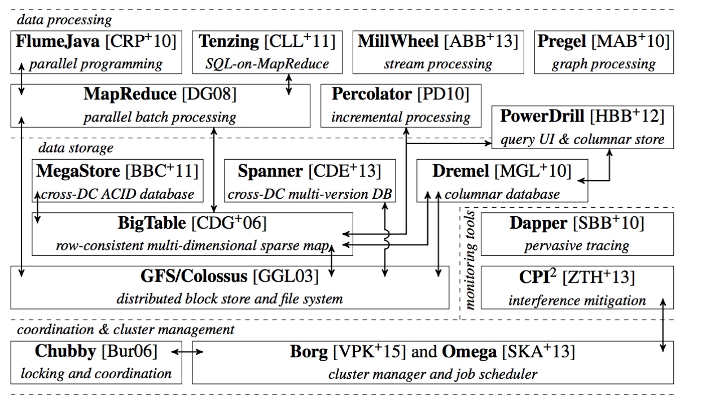
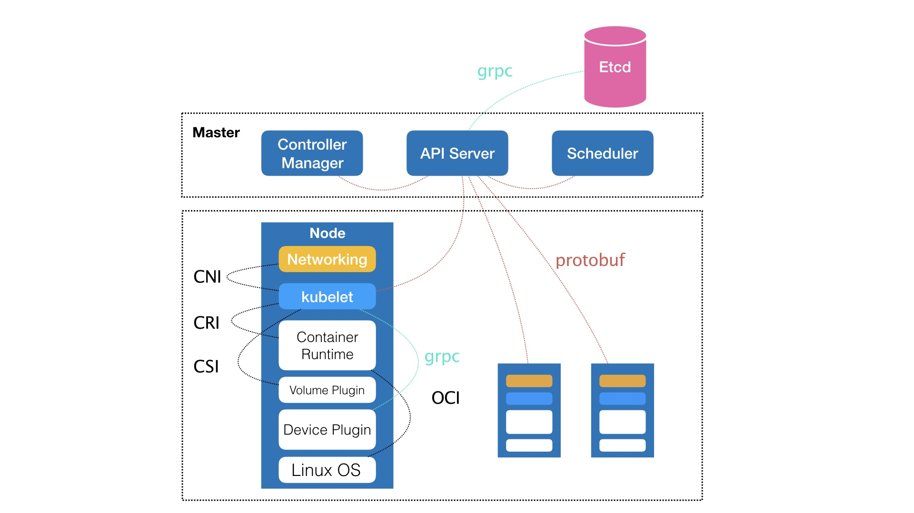
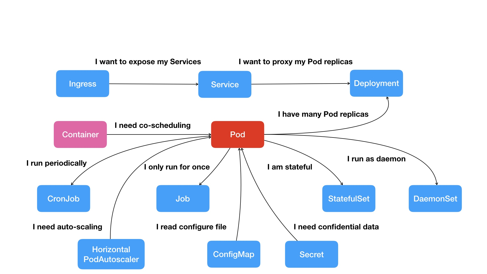

Kubernetes 项目在Borg体系下，体现出一种独有的 “独有性” 和 “完备性”

Kubernetes 项目要解决的问题
全局架构图

Kubernetes 由Master 和 Node 节点构成 这两个节点分别是控制节点和计算节点；
Master 节点
由三个独立组件组合而成，他们分别是负责API 服务的kube-apiserver ; 负责独立调度的kube-scheduler; 负责容器编排的 kube-controller-Manager ； 整个集群的持久化由kube-apiserver 处理后保存在 Etcd 中
Node 计算节点
计算节点的核心是一个kubelet组件，kubelet 负责与容器运行时打交道，而交互所依赖的是CRI（Container Runtime Interface），整个接口定义了容器运行时各项核心操作；只要能够运行标准的容器镜像，它就可以通过CRI接入到Kubernetes 项目中；如Docker 通过OCI运行时规范与底层的Linux 进行交互
- 通过gRCP与Device Plugin 插件进行交互，这个插件用来管理GPU等宿主机物理设备的主要组件
- 通过调用网络插件和存储插件为容器配置网络和存储；分别是CNI（Container Network Interface）和 CSI （Container Storage Interface）
Kubernetes 项目着重解决问题
运行在大规模集群中的各种任务之间，实际上存在各种关系，这些关系的处理才是作业编排和管理系统最难的地方；
Kubernetes 设计思想是，在宏观的角度，以统一的方式定义任务之间的各种关系，并且为将来更多的关系留余地
Pod
应用之间需要频繁的交互和访问，或者是通过文件进行信息交互，在Kubernetes 项目中，这些容器被划分为一个Pod，同一个Pod 共享同一个Network ，同一数据卷，达到高效交换信息目的
Service
比如web 应用与数据库之间的访问关系，Kubernetes 提供了一种Service 服务方式；Service 作用是作为Pod的代理入口，从而代替Pod对外暴露一个固定的网络地址
Kubernetes 核心功能全景图

首先容器之间紧密关系扩展到了Pod；有了Pod 希望以此启动多个应用实例 就扩张到Deployment 这个多实例管理器，有了一组相同的Pod需要一个固定的IP和端口以负载均衡的方式访问，这样就有了Service；
针对访问的授权信息则通过Secret 对象，保存在Etcd中启动Pod时，自动以Volume范式挂载到容器，这样就可以访问了
应用运行的形态是影响如何容器化这个应用的第二重重要因素；为此Kubernetes 定义了新的基于Pod改进对象的 - Job;Job 用来描述一次性的运行的Pod；DaemonSet 用来描述每个宿主机上必须且只能运行一个副本的守护进服务；CronJob 用来描述 定时任务
Kuberbnetes 推崇的是
- 首先通过一个“编排对象”，比如 Pod, Job , CronJob 描述你试图管理的应用
- 然后再为他们定义一些服务对象：比如 Service、Secret、Horizontal Pod Autoscaler（自动水平扩展器）等。这些对象，会负责具体的平台级功能
这就是所谓的“声明式 API”。这种 API 对应的“编排对象”和“服务对象”，都是 Kubernetes 项目中的 API 对象（API Object）